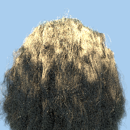
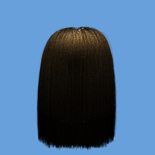

CSE 168 Final Project
Link to proposal here

What my implementation looks like. I will update if I have time to render a better image that is better lit,
but this took almost 1hr for my laptop to render. See below for more renders of a simpler groom
For this project, I implemented the paper "A Practical and Controllable Hair and Fur Model for Production
Path Tracing", used by Disney Animation Studios in their Hyperion Renderer. At first, I wanted to implement Steve
Marschner's recent elliptical hair model, but after almost two weeks debugging my code I decided to switch to a simpler
model like the TA suggested because I realized I wouldn't be able to finish it in time. I attached it anyways in hopes of getting some credit for it.
Because of these setbacks, I unfortunately was also unable to implement multi-bounce scattering in time.

Obligitory photo of Disney's model to break up paragraphs
Disney's model is based mainly off of d'Eon's earlier hair model, so d'Eon's paper was also very useful in implementing this.
Matt Pharr's implementation of the model in PBRT was also useful towards the end of my work; I didn't look at it to start because
I wanted my implementation to be mostly original, but it became useful towards the end when encountered a few problems. For example,
I was stuck getting an NaN when computing the longitutinal scattering function with low longitudinal rougness values.
Pharr's trick to operate on the log of I0 was very helpful.
To implement the model, I first had to find the parameters for the hit to calculate a basis aligned with the strand and to
calculate shading properly. Embree returns only a few parameters for each ray hit, notably the hit normal, and parameters u and v.
Embree doesn't provide documentation on what u and v represent for every geometry, but after looking at embree's source and doing a bit
of testing on my own, I found that u represented the distance along the spline and v represented the horizontal distance from the ribbon center
if flat ribbon splines were being used. I decided to use round curves to get useable normals, but I sacrificed being able to trivially
calculate the horizontal distance, which is used later in shading. Calculating this would have been difficult and imprecise, so I simply
made this distance a randomly generated number. To get a basis, I evaluated the derivative of the curve at u and took the
cross product of the normal and derivative to get the third basis vector.
Image of all the scattering lobes from d'Eon's paper
I then evaluate the BCSDF for each p-lobe, computing Mp * Np * Ap, where Mp is the longitudinal scattering function, Np
is the azimuthal scattering function, and Ap is the attenuation.
As far as features, I extended the renderer to import both alembic and .hair file formats. I realized after I implented alembic
that I could find no maya or alembic hair files online, so all I could do was use my own amateur models (image seen in the previous write-up).
To make it worse, my models didn't do a very good job of showing off the shading model. To fix this, I decided to also support
Cem Yuksel's .hair file format, so I could render his hair files (used in most papers since). To test my implementation, I rendered
a simple image with diffuse shading for the hair:
Hair with simple diffuse shading
Overall, I learned a lot about the surprisingly in-depth field of hair shading and modeling, most importantly to never be involved with it.
Here are a few intermediate renders to show the different features of the model. The sampling issues in the lower parts of the hair are due
to bad tangent calculations, but it is fixed in the final code

shiny hair with dim light and no ambient color
rough hair with no ambient color
rough hair with ambient color
shiny hair with ambient color